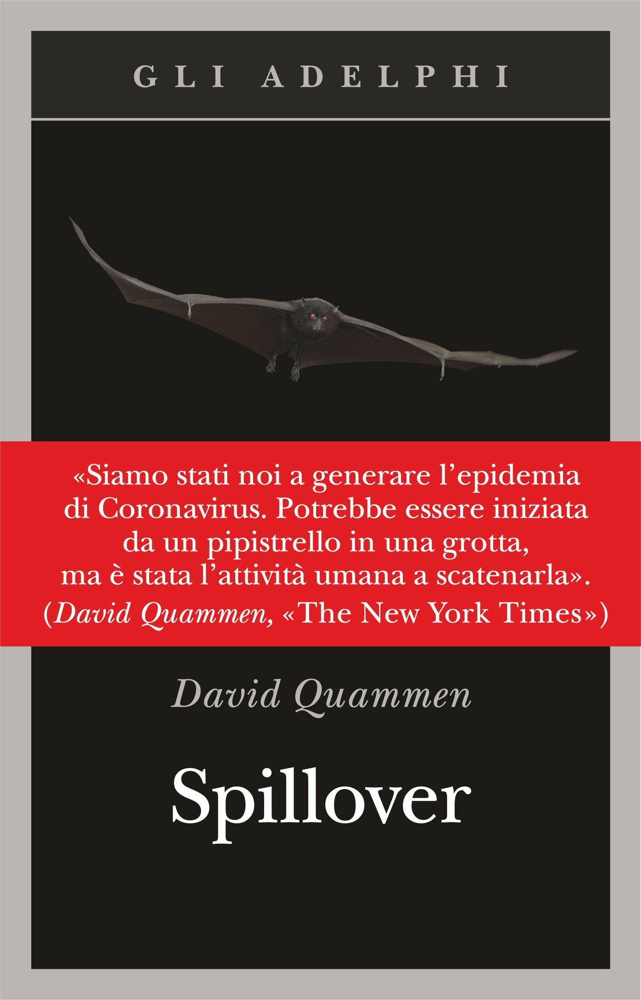

7:43 · 1 OPERA
Il regalo perfetto per il pandemente.
Il filo del discorso
Recensione fortemente polemica di Spillover di David Quammen. Il relatore discute il titolo italiano, la costruzione narrativa dei casi di zoonosi e il rapporto fra divulgazione, documentazione e uso della paura. Collega poi la propria critica alla comunicazione sanitaria del periodo pandemico, contestando confronti storici e autorità mediatiche. Il giudizio sul libro e le affermazioni sanitarie appartengono alla posizione espressa nel video.
I libri nel discorso

Spillover
Note sul riferimento
Copertina: Adelphi · Spillover · edizione di riferimento
Immagine associata all’ISBN di riferimento e controllata visivamente; edizione e traduzione non identificate come quelle citate o lette nel video.
Nome dell’autore e titolo annunciati nei segmenti iniziali; la trascrizione automatica ne deforma più volte il cognome.